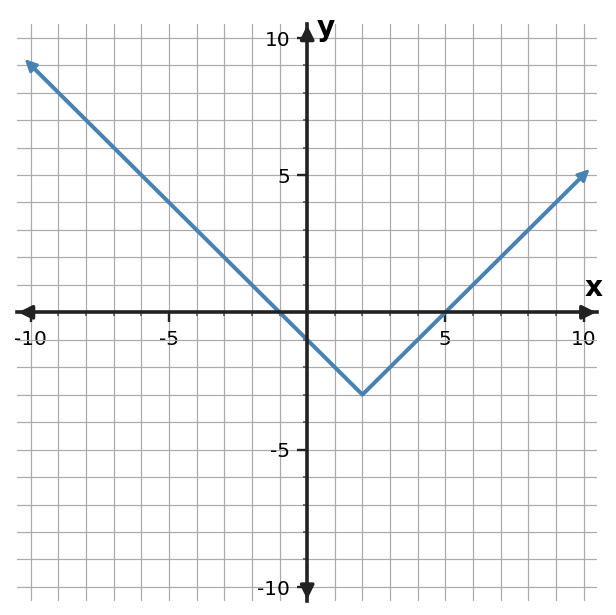

Algebra Practice 8.3
1. For $y=|x-2|-3$, state the vertex and describe the rate of change on each side of the vertex.
2. Use the symmetric table to locate the vertex and identify an absolute-value rule with scale factor 2.
| $x$ | 0 | 1 | 2 | 3 | 4 |
|---|---|---|---|---|---|
| $y$ | 4 | 2 | 0 | 2 | 4 |
3. For $f(x)=\begin{cases}2x+3,&x\lt 2\\-x+9,&x\ge 2\end{cases}$, find $f(5)$ and identify which rule applies.
4. A service fee is 8 dollars plus 2 dollars per unit for the first 6 units, then the rate changes to 0.5 dollars per additional unit beyond 6. Write a continuous piecewise cost rule for $d\ge0$.
5. A model gives distance from a trailhead as $d(t)=|4t-18|$ for a 6-hour trip. State a reasonable domain and explain why the algebraic rule should not be used for all real $t$.
6. Use the graph to state the vertex and x-intercepts of the absolute-value function. Then identify one interval where outputs decrease.

7. Find the two numbers that are 4 units from 3 by solving $|x-3|=4$.
8. Explain how $y=2|x-1|$ can be described with two linear rules on either side of $x=1$. Include the slopes and meeting point.
9. For $y=|x-4|+1$, state an interval where the function is decreasing and an interval where it is increasing.
10. A thermostat target is 65°F. Write an expression for the number of degrees a temperature $T$ is away from the target.
11. For $y=0.5|x-4|-2$, state the vertex and describe the rate of change on each side of the vertex.
12. Use the symmetric table to locate the vertex and identify an absolute-value rule with scale factor 3.
| $x$ | -1 | 0 | 1 | 2 | 3 |
|---|---|---|---|---|---|
| $y$ | 6 | 3 | 0 | 3 | 6 |
13. For $f(x)=\begin{cases}4x+2,&x\lt -1\\-x+10,&x\ge -1\end{cases}$, find $f(0)$ and identify which rule applies.
14. A parking lot charges 4 dollars plus 3 dollars per hour for the first 2 hours, then 10 dollars plus 2 dollars for each additional hour. Write a piecewise cost rule for $h\ge0$.
15. A model gives distance from a trailhead as $d(t)=|3t-9|$ for a 4-hour trip. State a reasonable domain and explain why the algebraic rule should not be used for all real $t$.
16. Use the graph to state the vertex and x-intercepts of the absolute-value function. Then use symmetry to check the intercept pair.

17. Find the two numbers that are 5 units from 3 by solving $|x-3|=5$.
18. Explain how $y=3|x+2|$ can be described with two linear rules on either side of $x=-2$. Include the slopes and meeting point.
19. The outputs for consecutive integer inputs are $5,10,20,40$. Identify the relationship as exponential and state the ratio.
20. Explain why $y=7(0.6)^x$ is exponential and whether it represents growth or decay.
21. A medication amount is multiplied by 0.8 each hour. Identify the function family and interpret the factor 0.8.
22. Solve $(x-4)(x+3)=0$ and interpret the solutions as x-intercepts of the related parabola.
23. Factor and solve $x^2-x-12=0$.
24. A height model factors as $h(t)=-4(t-2)(t-6)$. At what times is the height 0, and which times are meaningful if $t$ is seconds after launch?